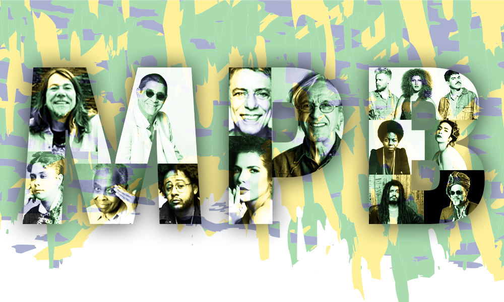

A Música Popular Brasileira (MPB) é um dos principais estilos musicais do Brasil. Ela reúne diferentes ritmos, culturas e influências, formando uma música rica e diversificada. Ao longo dos anos, grandes artistas ajudaram a transformar a MPB em uma parte importante da cultura brasileira.
A história da MPB é como uma grande viagem musical pelo Brasil. Ela nasceu do encontro de diferentes ritmos, culturas e histórias, misturando sons brasileiros com novas influências. Ao longo do tempo, artistas transformaram suas vozes em verdadeiras pontes entre gerações, fazendo a música brasileira viajar pelos quatro cantos do país.
A MPB ganhou vida através de artistas que transformaram sentimentos, histórias e experiências em música. De Elis Regina a Milton Nascimento, de Caetano Veloso a Marisa Monte, cada voz trouxe uma maneira única de cantar o Brasil. Juntos, esses artistas ajudaram a construir uma verdadeira constelação musical, cujas canções continuam atravessando gerações.
Uma curiosidade é que a MPB não é apenas um estilo musical, mas uma grande mistura de sons e culturas. Ela recebeu influências do samba, bossa nova, rock, música regional e muitos outros ritmos. Por isso, a MPB parece um enorme mosaico musical, onde cada artista acrescenta uma nova peça à história do Brasil.